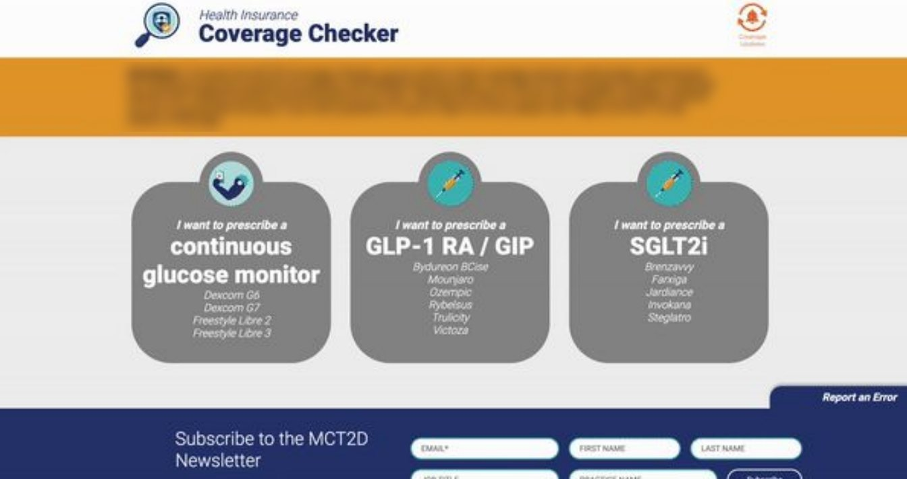
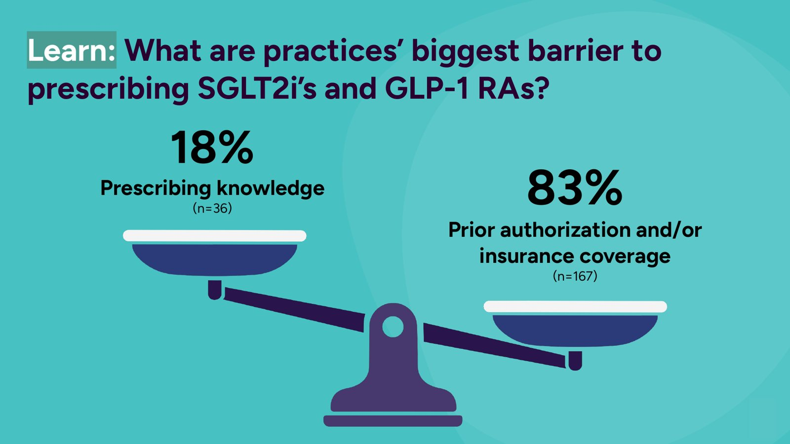
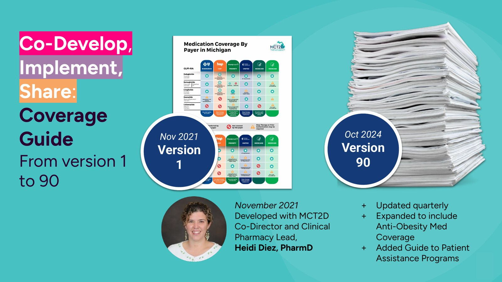
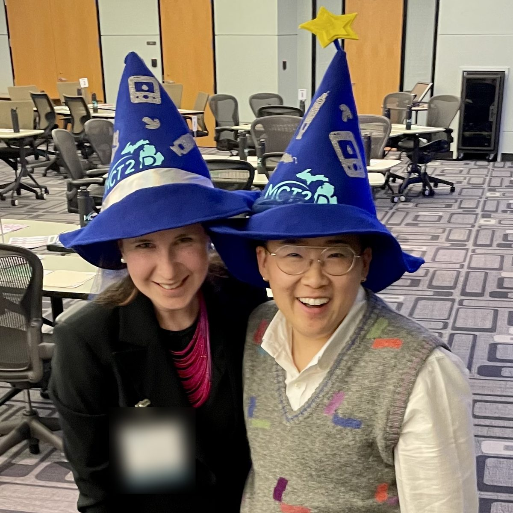
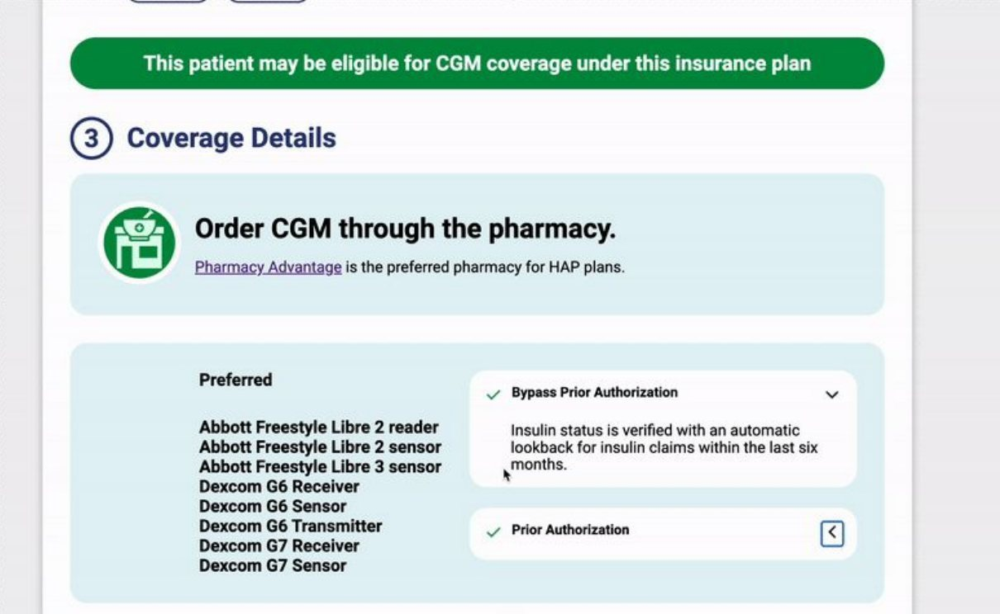
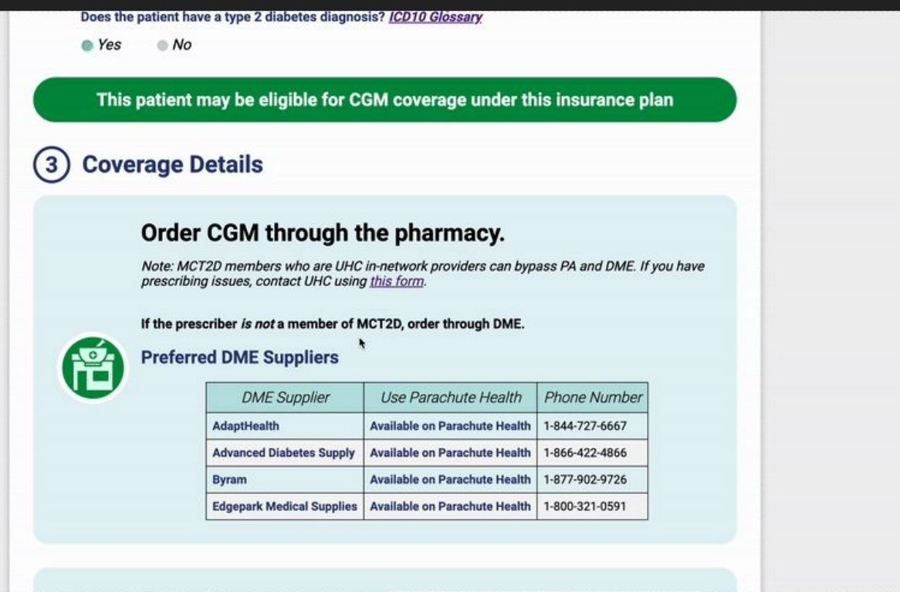

Success story · Health IT
Making Diabetes Coverage Navigable for Michigan Care Teams
We partnered with primary care practices across Michigan to turn a maze of prior authorization rules into Coverage Checker, a free tool that shows any care team member what a patient's plan covers and how to get it approved.

Impact
- 174,000+downloads and views by care teams since the first guide launched in 2021
- ~75%of Michigan's largest commercial, Medicare, and Medicaid policies covered in one place
- 1,403physicians in 395 practices, caring for nearly 189,000 people with type 2 diabetes, with access to the tool
The challenge
Newer type 2 diabetes treatments, including GLP-1 receptor agonists, SGLT2 inhibitors, and continuous glucose monitors (CGMs), are now standard of care. Getting them to patients is another matter. Every insurance plan has its own preferred products, step therapy rules, and prior authorization criteria. A CGM might go through the pharmacy on one plan and a durable medical equipment (DME) supplier on another. The rules change every year, and sometimes every quarter.
That work lands on short-staffed clinical teams. Primary care clinicians describe feeling "tethered to the electronic health record." Staff spend hours uploading documentation, waiting on hold with plans, and standing by the fax machine. Some of the effort is futile from the start: when a plan excludes a whole drug class, no prior authorization will succeed, but teams often find out only after a denial.
When we asked practices in the Michigan Collaborative for Type 2 Diabetes (MCT2D) what stood in the way of prescribing these medications, 83% named prior authorization or insurance coverage. Only 18% named prescribing knowledge. Clinicians knew what their patients needed. The paperwork was the barrier.
How might we give every member of a care team a clear, current answer to "will this plan cover it, and what will it take?" at the moment they need it?
Payer formularies and medical policies were public but scattered across dozens of PDFs and portals, written for payers rather than clinics, and out of date almost as soon as they were saved. No single place put them together for Michigan practices.
Our approach
MCT2D is a statewide, all-payer quality improvement collaborative. Its coordinating center is small: about eight full-time staff, three of them human-centered designers and informaticists. We designed the right thing before designing the thing right, listening first to the practices and payers on both sides of every prior authorization.
- Listen to the people doing the work. We analyzed nearly 1,000 physician-submitted case summaries and needs assessments, plus transcripts of meetings with practice teams. Prior authorization surfaced again and again, along with a request for an "easy button."
- Learn from every side of the transaction. We spent more than 30 hours in one-on-one calls with payers, public plan medical leads, and diabetes drug and device representatives to understand where coverage criteria live and how often they change.
- Make the problem playable. In Coverage Quest, a fantasy-themed mapping game described below, care teams walked a patient through the coverage process step by step and marked every place it broke down.
"Digital algorithm for point of care use for providers: insurance class, preferred options, details needed for PA."
— MCT2D practice participant, describing what they needed

Start with paper
Before building software, we tested the idea with the cheapest thing that could work. In November 2021, MCT2D's clinical pharmacy lead and our design team published a coverage guide as a PDF on mct2d.org, shared it in the newsletter, and handed it out at collaborative meetings. It quickly ranked in the top 1.5% of the site's most-visited pages. Over the next three years it went through 90 versions, updated quarterly, and grew to include anti-obesity medications and patient assistance programs.

Coverage Quest: process mapping as a game
Process mapping is a standard quality improvement tool, but it can feel like homework. So Larrea Young and I turned it into a game. At a 45-minute session during an MCT2D regional meeting, care teams from across the state set out to get a fictional patient covered for their prescription. Each game board, designed in-house, introduced a character with diagnoses, lab results, and current medications. Sticky notes served as game pieces:
- Blue: the path. The steps a clinic usually takes to get a medication covered.
- Orange: the obstacles. Barriers, setbacks, and challenges along the way.
- Yellow: the magic. Best practices, tips, tools, and resources that helped.
Players added MCT2D tool stickers wherever one of our resources could help. Once their character could finally start the prescription, each team placed a "Magic Wand" sticker on the one step they most wanted to fix. Fantasy music played in the background, and the facilitators wore wizard hats.
Many participants were skeptical at first, and most left with discussion points and tools to bring back to their practices. We collected more than 200 completed game boards, each one a map of where coverage breaks down in a real Michigan clinic. MCT2D set out to use them to identify the most common coverage barriers, see where teams were already using its tools, and compare workflows across practices.
"Sometimes people need a shift in their environment and to do something unexpected."
— Noa Kim, on designing Coverage Quest

Then build the easy button, with clinicians
In early 2024, a small group of MCT2D clinicians met with us four times in focus groups to co-design and test an interactive version. Between sessions, the design team ran agile design sprints and brought back prototypes for clinicians to try and critique. We launched a minimum viable product in May 2024. In a few clicks, a care team member picks what they want to prescribe and the patient's plan, and the tool returns:
- Coverage at a glance. Preferred products, step therapy, and prior authorization criteria for that plan.
- A way around prior authorization, when one exists. The tool flags plans that verify eligibility automatically, so no PA is needed.
- Pharmacy or DME. It says where to send a CGM order and which DME suppliers to use.
- A warning before a futile request. When a plan excludes a drug class, the tool says so up front.
- Documentation, done. A dot phrase generator writes the chart note the plan requires, ready to paste into the EHR.


Practices that made it work
- Start small and validate early. A PDF proved demand and taught us what content mattered before we wrote any code.
- Co-create, then deliver. Building with clinicians, and shipping what we promised, built trust that led to deeper engagement.
- Scope tightly and be transparent. Careful feature scoping and an open timeline let a small team ship a bespoke product quickly.
- Treat maintenance as the product. Quarterly reviews of formularies and medical policies, and regular meetings with payers, keep the answers right.
Outcomes
Coverage Checker now covers roughly 75% of Michigan's largest commercial, Medicare, and Medicaid policies, and has been downloaded and viewed more than 174,000 times. By December 2024, care teams had run 10,545 searches and spent twice as long on Coverage Checker as on the average page of the site. In a user survey, 100% of respondents said they would recommend it to a colleague. One practice called it "our bible."
A companion tool helps patients understand their own plan's medication and CGM coverage. Practices told us the patient tools "have saved office staff time," and that patients feel more able to take their care into their own hands.
The less visible outcome matters as much. Keeping the data current pushed us to build working relationships across the payer landscape, and regular collaboration with payers led to more accountability, improvements to coverage criteria, and streamlined approvals. The tool helps teams route around the burden, and it gave us standing to push on its source.
The work has limits. Coverage Checker includes the most common Michigan plans but not pharmacy carve-outs, and it can't fix drug shortages, high-deductible plans, or slow-moving DME ordering systems. Next, MCT2D planned a mobile "Coverage Checker Lite," broader plan coverage through a pharmacy benefit manager data partnership, crowdsourced data quality checks, and coverage tracking for diabetes prevention programs.
The work was peer reviewed in Annals of Family Medicine (2025) and presented at the IHI National Forum on Quality Improvement in Health Care (2024).
This work was made possible by a health plan's funding of the Michigan Collaborative for Type 2 Diabetes, a statewide collaborative quality initiative.
My role
I did this work with Larrea Young, MDes (design project manager), Julian Weisensel (multimedia designer), Ryan Carpus (senior web applications developer), and the clinicians, pharmacists, and quality improvement staff of MCT2D.
Further reading
- Kim N, Cardinal S, Gabison J, Oshman L, Rau J, Reiss J, Young L, Diez HL. Coverage Checker: a web-based tool to navigate diabetes coverage and prior authorization. Annals of Family Medicine. 2025;23(4):378. doi:10.1370/afm.240633 · My post announcing the paper on LinkedIn
- Kim N, Young L. Coverage Checker: applying human-centered design to develop a tool for insurance coverage navigation. Session C17, IHI National Forum; December 10, 2024. My post about the session on LinkedIn
- Oshman L, Bhomia N, Diez HL, … Kim N, et al. The Michigan Collaborative for Type 2 Diabetes (MCT2D): development and implementation of a statewide collaborative quality initiative. BMC Health Services Research. 2024. doi:10.1186/s12913-024-11520-z
- Try the tool: MCT2D Coverage Checker
Working to cut administrative burden in health care?
I'd love to hear what you're building, and where people are getting stuck.